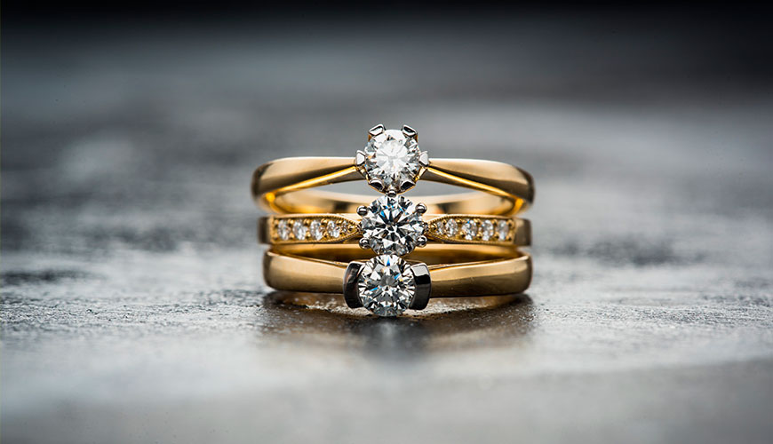
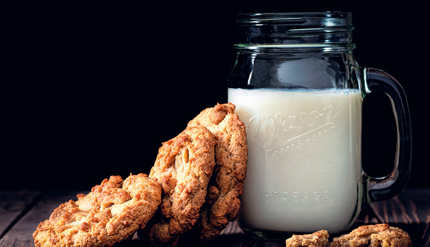

Dresden Green Vault robbery: Priceless diamonds stolen
November 21, 2019 — NO COMENTS
Burglars have stolen three diamond jewellery sets from one of Europe's largest treasure collections - the Dresden Green Vault in eastern Germany.
The historic sets consist of 37 parts each, and there are fears the thieves may try to break them up.
Officials are still trying to establish exactly how much was stolen in the break-in early on Monday. Saxony's ruler, Augustus the Strong, created the collection in 1723 in what is one of the world's oldest museums.
Cannabis legalisation: Does it lead to harder drug use?
November 20, 2019 — 1 COMENTS
There's strong disagreement among Democratic contenders for the US presidency about legalising cannabis and it's been a flashpoint in their televised debates. Joe Biden, currently the leading contender in the race, won't be drawn either way. He wants more evidence about whether using it could act as a "gateway" to the use of harder drugs before it's legalised throughout the US. "Before I legalise it nationally," said Biden, "I want to make sure we know a lot more about the science behind it."
Why do billions of people still not have glasses?
November 19, 2019 — 2 COMENTS
Making spacecraft is not a job in which you can afford to be slapdash. At Lockheed Martin, for example, it used to take a technician two painstaking days to measure 309 locations for certain fasteners on a particular curved panel.
But according to Shelley Peterson, the aerospace company's head of emerging technologies, the same job now takes little more than two hours.
Is it better to drink cow’s milk or a dairy-free alternative?
November 18, 2019 — 4 COMENTS
Milk plays a crucial role in the life of all mammals, right from birth. But some say that drinking another mammal’s milk is unnecessary, unnatural, even unhealthy.
As the only animal to drink the milk of another species, humans have an unusual relationship with the white stuff. Most other animals are weaned off milk in infancy, once we start to need more complex foods. So why do humans keep drinking it?
How we could sleep better — in less time
November 18, 2019 — 6 COMENTS
We can now amplify the restorative benefits of sleep. Could this help us cope with later nights and early mornings?
We often wear our sleeplessness as a badge of pride – a measure of our impossibly hectic schedules.
Thomas Edison, Margaret Thatcher, Martha Stewart and Donald Trump have all famously claimed to get by on just four or five hours’ sleep a night – much less than the seven-to-nine hours recommended to most adults.